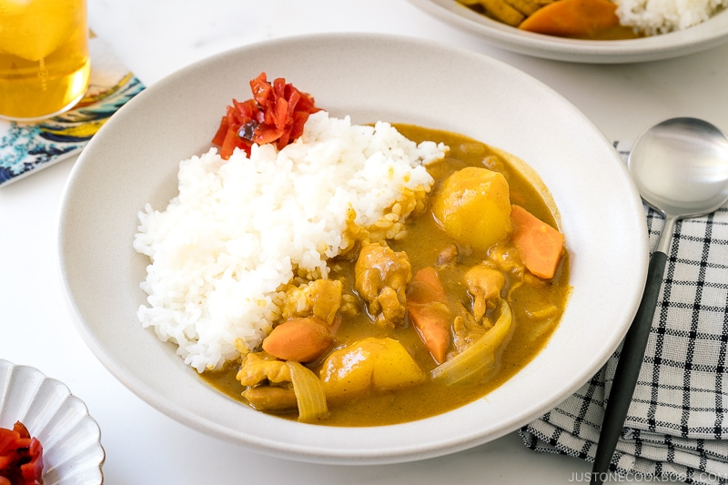

Japanese Chicken Curry チキンカレー

Description
Delicious Japanese chicken curry recipe for a weeknight dinner! Tender pieces of chicken, carrots, and potatoes cooked in a rich savory curry sauce, this Japanese version of curry is a must-have for your family meal.
-Namiko Hirasawa Chen's take on a classic Japanese recipe.
Ingredients
- 1½ lb boneless, skinless chicken thighs
- ¼ tsp kosher salt (Diamond Crystal; use half for table salt)
- freshly ground black pepper
- 2 carrots (6.7 oz, 190 g)
- 2 onions (large; 1.5 lb, 670 g)
- 3 Yukon gold potatoes
- 1 knob ginger
- 2 cloves garlic
- ½ apple
- 1½ Tbsp neutral-flavored oil (vegetable, rice bran, canola, etc.)
For the Curry
- 4 cups Chicken Stock/Broth (homemade or store bought)
- 1 Tbsp honey
- 1 Tbsp soy sauce
- 1 Tbsp ketchup
- 1 package Japanese curry roux
- 2-4 tsp kosher salt (Diamond Crystal; use half for table salt)